Filtering and Effects
Filters and Effects describe almost any action that can be taken on all
or part of an audio track, that changes how it sounds. These can
be as simple as making it louder or complex such as Point Cast
Distortion. There are over 125 different effects that come with
Audacity, and even more can be found online.
The use of all of these filters, unless otherwise specified, acts on a
selection of audio. You can use the selection tool to make
selections by clicking and draging over the area on the waveform you
want to select. To select the entire audio track(s) you can press
Ctrl+A.
For these examples, lets start by downloading the male track from last time.
Amplification
The most basic task that you would typically come across when working
with an audio track would be to raise or lower (amplify) the volume for
a portion of the track. You may remember from the last section,
that it is possible to raise or lower the volume of an entire track by
using the slider to the left of the track, however that won't work for
only a portion of the track.
Lets make a selection and then go to to Effect -> Amplify.
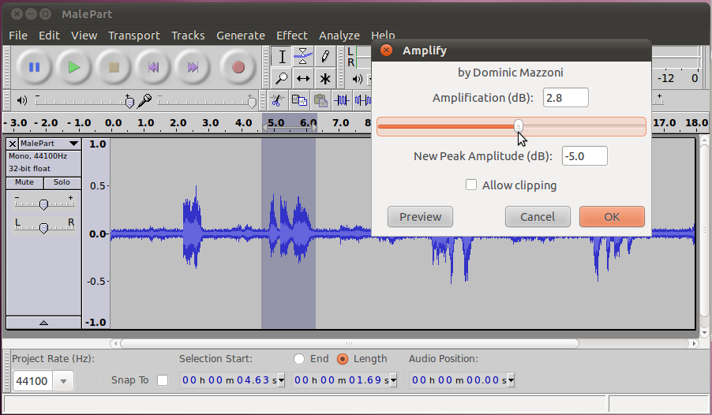
You will have to choose an amount of aplification in dBs. Zero
dBs won't change the selection, something greater than zero will raise
the volume, something lower than zero will lower it. It is
possible to slide it so far to the right that part of the audio goes
beyond what is capable of being played back (past 1.0 on the scale),
this is called clipping. You can check the box to allow it if
this is what you want, but it will sound bad.
Here is what it looks like with a rather large amplification.
Normally this would probably be far too much, but it was exagerated for
the sake of emphasis.
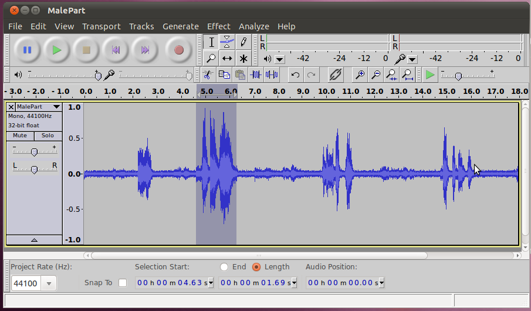
That's all there is to amplification.
Noise Removal
You may have noticed that in this clip, there is a substantial buzz/hum
in the background. This is annoying and makes it harder to listen
to, so we would like to remove this. For the areas where there is
only the background noise but no talking we could just use the silence
or envelope tool to remove them, but unfortunately (as is common) the
background noise continues even when the person is talking. To
remove this from everywhere, including the important audio, we'll use
the noise removal filter.
We'll start by selecting an area of the audio that ONLY has the
background noise. It is important that there isn't any other
noise here, as the filter will create a profile based on this, that
will be applied to the whole clip. Once we have our selection, go
to Effect -> Noise Removal.
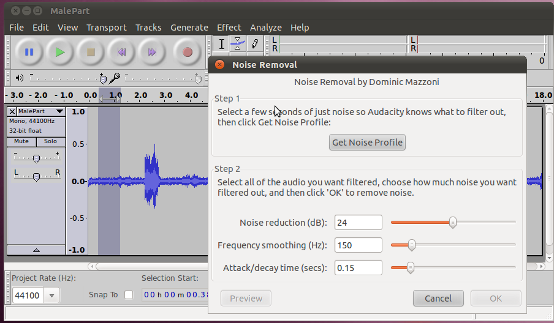
Click "Get Noise Profile" to use the selected area as the profile.
Now we'll go back and select the area that we want to remove the
backgroung noise from (probably the whole clip) and go back to the
Noise Removal effect. We're now in step two, applying the
filter. We can probably just leave the settings at their defaults
of 24db, 150Hz, and 0.15s. And hit OK.
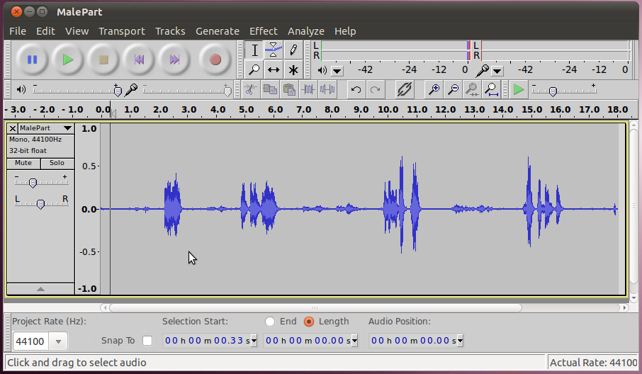
Listen to it to hear the differnce (hit Ctrl+Z to go back and hear the
old one too). If you turn the volume up, you can still hear some
noise in the quiet parts, but it is much better now, and not noticable
during the talking. If you want to fix up the quiet parts
further, you can use the silence or envelope tools.
Fade In/Out
For the next couple sections, we're going to need just a short clip of
audio. To get it, open the sintel trailer, and create a selection
that starts at 17 seconds in and goes for 15 seconds. (Hint: use
the selection bar below the waveforms)
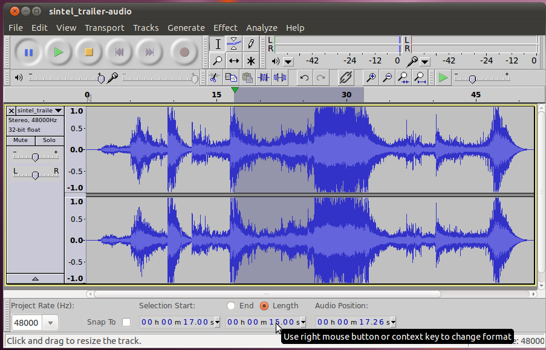
Once we have our selection, we'll cut everything else, so that we only
have our selection remaining. Instead of using the normal cut
button, we can use the trim button to remove everything else in the
clip.
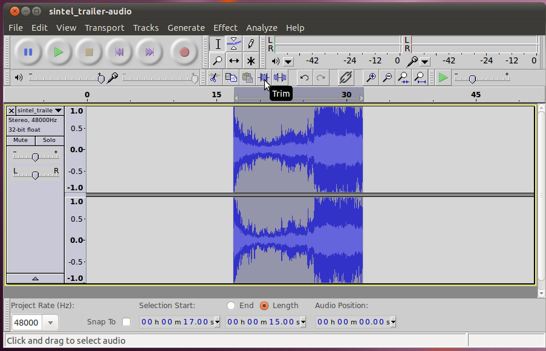
Finally, use the time shift tool to move it to the begenning.
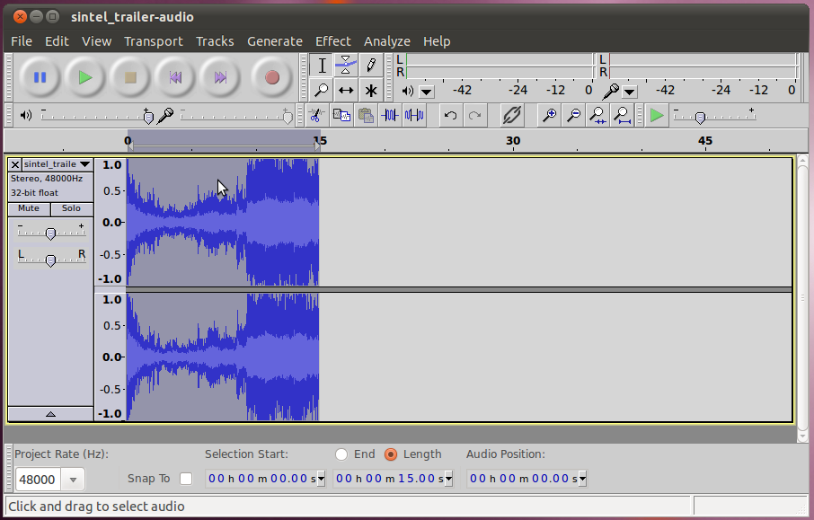
(Now would be a good time to save your work)
Now that we're all set, we can start editing this clip to make it sound
good. One of the first things we notice when we listen to it, is
that it starts and stops very suddenly. To smooth out that
transition, we'll use the Fade In and Fade Out effects.
To start using the Fade In effect, we will select the area we want to
apply it to. It doesn't take much time to make a good fade in, so lets
select the first half second or so.
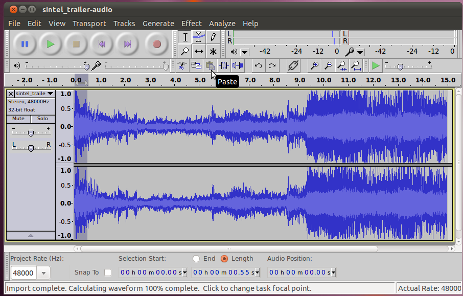
Now that we've got it selected, run Effects -> Fade In.
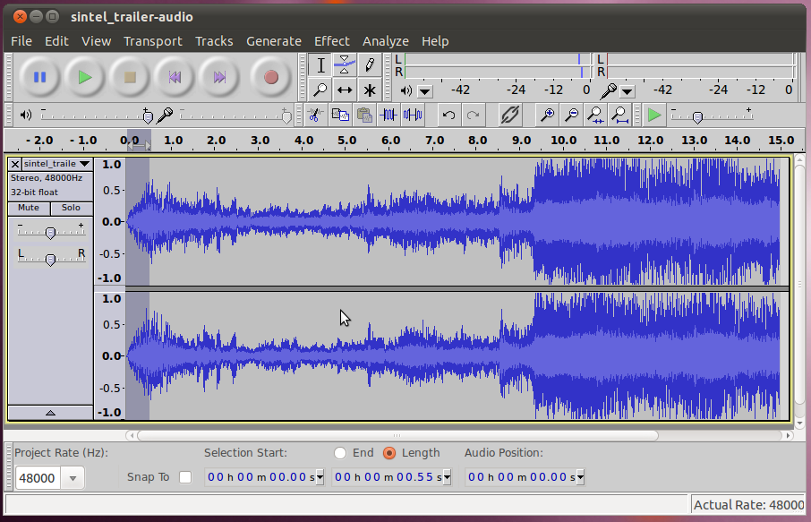
You can listen to the start of the clip and hear a big difference in
the two starts. Our new one with the Fade In is much smoother.
For the fade out, we'll make it a bit more gradual (because there's a
lot of sound immediately before that), so this time lets select the
final one second (or so).
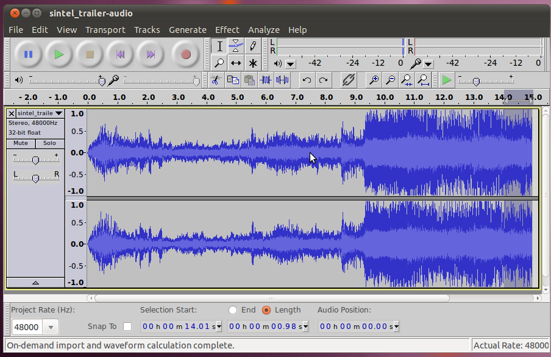
Run Effects -> Fade Out.
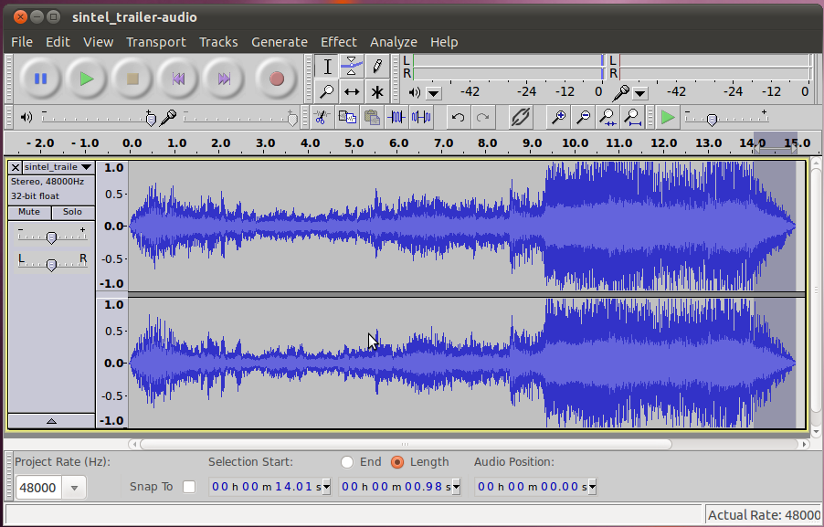
You can listen to the end of the clip and hear that the fade out makes
it much less jarring of a drop off.
Compressor
Sometimes a clip of audio (such as the one we're working with) can have
sections that are a lot quieter than others. In this specific
case, its probably a good thing, because the video is trying to convey
excitement in the loud parts. However, often, this isn't a
desireable feature. For instance, if you have a recording of a
person talking, and they were to move closer or further from the
microphone during the recoding, that may force people to adjust their
volume control. For an instance such as that, we'd prefer if the
sound was always relatively close to the same level. The tool
that does this for us, is the compressor.
http://en.wikipedia.org/wiki/Audio_compressor
The settings for Audacity's compressor are (from the audacity wiki,
CC-BY):
- Threshold - the volume level at which compression starts to be
applied. The further right the slider, the louder the input has to be
before compression is applied.
- Ratio - if the level is above the threshold, how much it will be
reduced. For example, a 3:1 ratio implies that a passage in the
original audio that became 3 dB louder would only become 1 dB louder in
the compressed result. The further the slider is to right, the stronger
is the compression applied.
- Attack time - the amount of time the compressor waits to respond
after the Threshold is reached
- Decay Time - how soon the compressor starts to increase the
volume level back to normal after the level drops below the Threshold
- Make up gain for 0 dB after compressing - if this is checked,
then after compression the audio will be amplified to the maximum
amount possible without adding distortion
In Audacity it is easy to apply the compressor, just select the audio
you want to compress (all from this clip) and then go to Effects ->
Compressor. Here you can set the values explained above (or leave
the defaults). Then click OK.
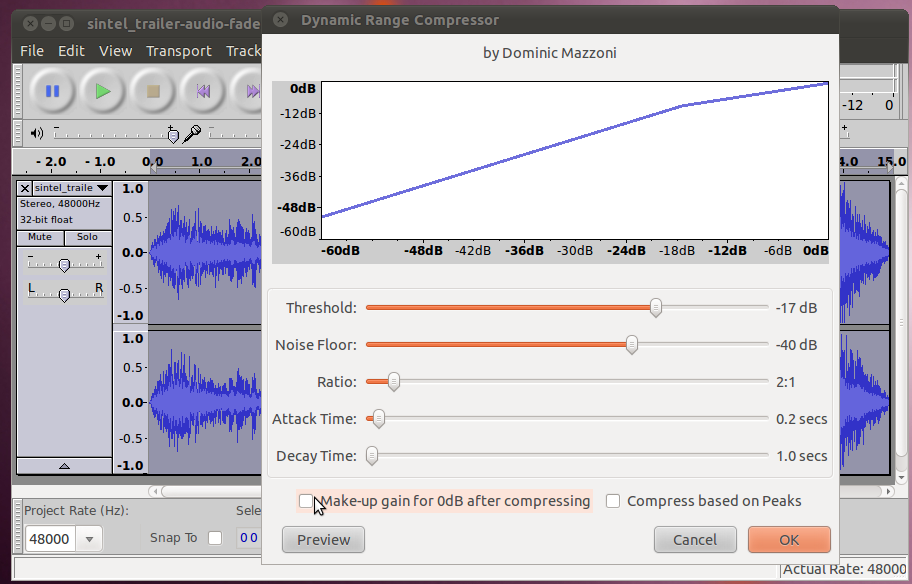
You will see that the loud audio section from your track has been
lowered down a lot while the quieter section hasn't been changed very
much. If you listen to the audio, the part where it gets loud
isn't nearly as overpowering anymore.
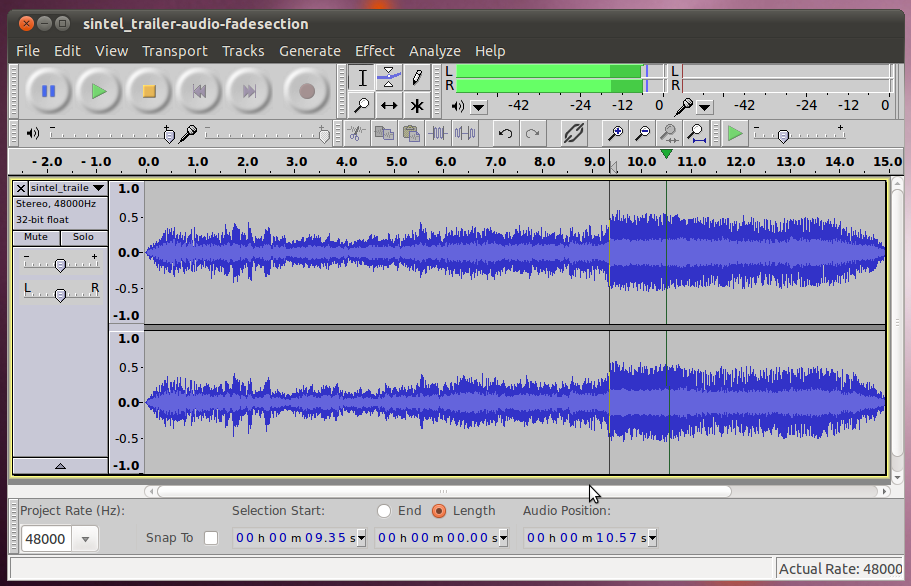
Changing Sound
Until now we've been looking at ways to basically clean the sound
up. However, it is also possible to use effects to make it sound
all-together different. There are many ways of doing this, but
the two most basic ones are changing Pitch (how high or low the sound
is) and Tempo (how fast the sound comes). From a theoretical
standpoint it is difficult to change either pitch or tempo without
affecting the other. Typically, changing either of these involves
changing the speed. If you change the speed faster, the tempo
gets faster along with it, and the pitch goes up (think of how high the
voices sound when you fast forward through audio). When you lower
the speed so it is slower, the tempo slows down and the pitch goes down
as well, giving voices a deeper sound. This can be done by using
the Effect -> Change Speed... tool in audacity. In addition,
audacity has built in the (quite complex) ability to change change
either the Pitch or Tempo without affecting the other. Lets give
all three a try.
First, lets select our entire clip, and choose Effect -> Change
Speed... On the dialog that comes up, increase the speed by 15%
and click OK. You will immediately notice that the clip has
gotten shorter (by 15%). When you play it back, everything will
sound like it is coming fast, and the voice of the woman in the first
few seconds will sound very high. Once you've seen these results,
undo that change, and we'll try the next one.
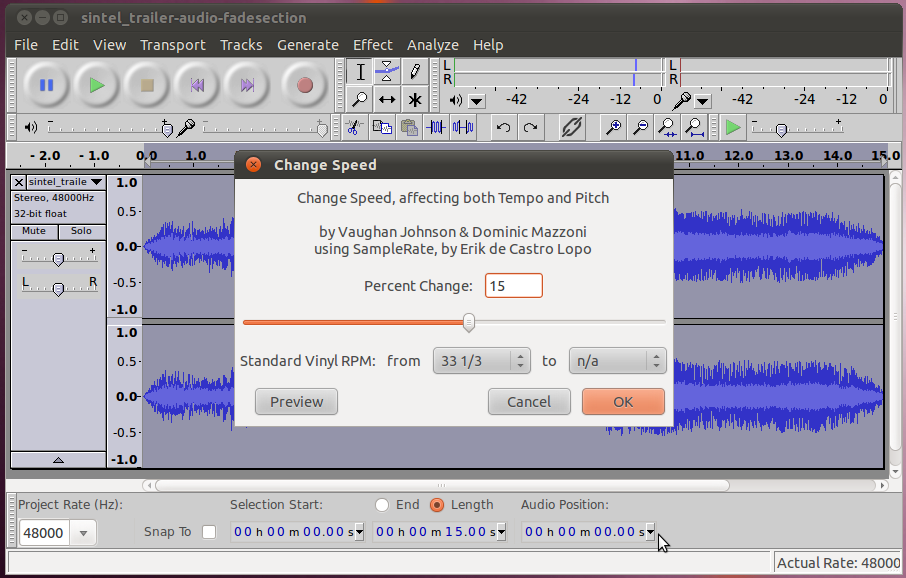
Again, with the entire clip selected, choose Effect -> Change
Tempo... On the dialog that comes up, again, increase the tempo
by 15% and click OK. Again you will see the clip get
shorter. This time when you play it back, it will still sound
like it is coming fast, but the voice will be about the same as it was
in the original. When you're finished trying this out, undo your
change so we can try the next one.
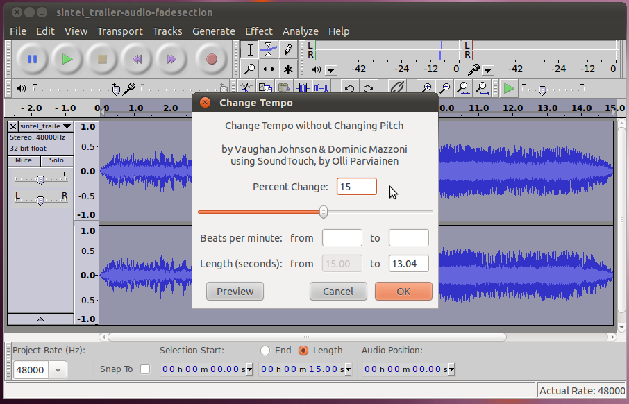
Finally, with the entire clip selected, choose Effect -> Change
Pitch... This time on the dialog that comes up, reduce the pitch
by 15% and click OK. In this case, the length of the clip will
stay (approximately) un-changed. However, when you play back, the
woman's voice will sound lower, almost like that of a man!
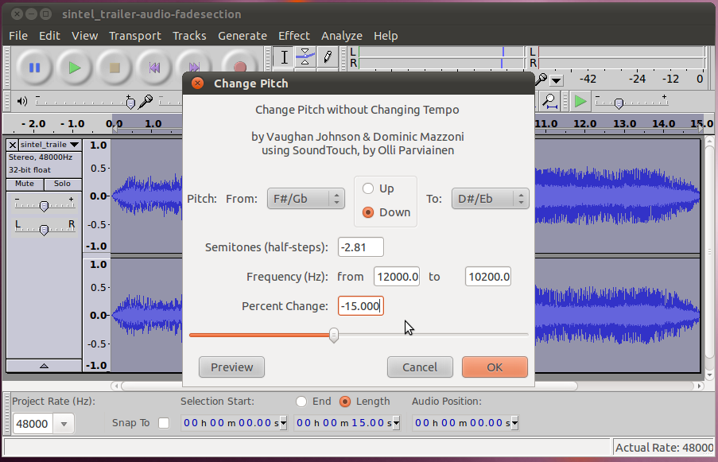
More Effects
There are a whole slew of more effects built in to Audacity. In
addition, Audacity has a plugin system that allows other developers to
load their own plugins, so there are even more (114!) that come with
the version that gets installed into Ubuntu. Beyond that you
could go out onto the internet and find plugins of the LADSPA, Nyquist,
or VST type and load them into Audacity as well. Spend some time
playing around with the different plugins and see what sounds you can
create!